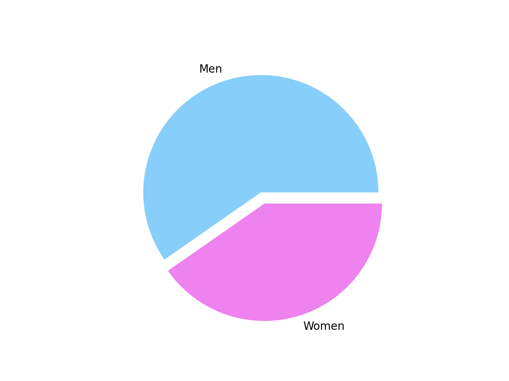

Olympic Sports and Medals
Olympic Sports and Medals, 1896-2014.
Number of medals in Russia from 1896-2014.
Number of medals in Russia from 1896-2014.
From the pie chart below we can see that sportsmens from Russia get more golden medals, than silver and bronze medals from 1896 to 2014. They earn 94 golden medals,90silver and 79 bronze medals.
Comparison of male athletes and female athletes./h1>
Comparison of male athletes and female athletes.
On the chart below we clearly see that man sportsmens had more medals , than female sportsmens. Because sportsmens had 157 medals and female sportsmens had 106 medals. But the numbers of medals grew from 1995 to 2002. After the quantity of awards was stable for a few years from 2002 to 2007.
Comparison of different kind of sports
Comparison of different kind of sports
Here we can see that the Skating is the most popular kind of sport with great amount of medals. Skating sportsmens earn 79 medals,skiing specialist got 60 medals, Biathlon and Ice Hockey had 57 and 46 awards,Bobsleigh won 15 medals and Luge sportsmens had 6 medals.